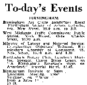

The Conscientious Objectors’ Tribunal
I had to be at the Chamber of Commerce, New Street, by 10.15am when Mr Dibben and Alan Knott were meeting me. The Tribunal was held at 10.30am in Room 7 on the 2nd Floor, and I was the second person to be tried. I submitted eight references, from Cyril Plater, the Revd F.E.A. Shepherd, Mr F.J. Green, Ian Howard, George Cummings, Mr L.A. Bloomfield, Mr Moore and Dr. Gough. I was asked to read my own statement to the tribunal:—
I believe that in our Lord Jesus Christ, God has revealed Himself to all mankind as a God of patience, pity, and love, which found perfect fulfilment in His death and resurrection.
I accept Jesus Christ as my Saviour and He claims my love and loyalty. In His life and teaching, He has shown what we are meant to be. He has made clear that He is Lord of all men. Therefore, every Christian has a personal responsibility to his fellow men.
Love and peace are the ultimate expression of this responsibility, and the consequence of all our thoughts, desires, and actions. Military preparation can only be a denial of this love and of Christ’s promise to fulfil this love in us.
The question of pacifism has been described as the most difficult in personal philosophy. The pacifist must search his heart, shun self-deception and false idealism. Through constant prayer and in the Power of the Holy Spirit I have tried to do so. I have come to the conclusion that I can in no way take part in any form of military preparation. I therefore ask to be registered unconditionally as a conscientious objector.
“Here stand I. I can no other. So help me God.”
Afterwards I was asked some quite searching questions and at one point it became aggressive and Mr Dibben intervened. I knew that a lot of people were praying for me, but it was an ordeal nevertheless. I was quite prepared to go to prison if I had to. However, after some discussion they agreed to register me on condition that I remain in my work at the hospital for two more years, which I am happy to do.
I called in at TI Exports in John Bright Street about 11.20am to see Freda and tell her the outcome. I met her from the train as usual [at Acocks Green Station, the 5.35pm from Snow Hill]. Tonight we went to the Olton to see The King and I with Yul Brynner and Deborah Kerr.
Ann and Geoff got engaged yesterday.
Before sending the letters to the Tribunal I typed a copy of each. I was expecting to go on trial a year ago, so Cyril was the first person I asked to support me. He wrote:—
TO WHOM IT MAY CONCERN
Dear Sir/s or Madam,
As overseer of the Apostolic Church here at Margate, I bear testimony that Mr. Brian Williams of Birmingham has held faithful witness to the Saving Power of Jesus Christ.
While on holiday in 1954 and 1955 he has preached with us in open-air meetings and from our platforms (including Ramsgate).
Yours truly,
Cyril Plater
107, Dane Road, Margate, Kent.
22nd Sept. 1955
TO WHOM IT MAY CONCERN
Brian Williams has asked me to testify to his sincerity in objecting to training for military service and I have much pleasure in doing so. Before the last General Election, a small group met in my house to draw up a protest against the manufacture of the H-bomb in this country. We sent this protest to our respective candidates in our various constituencies, and also to the national and local press (none of whom, I may say, published it.) In this effort Brian took an active part and was, in fact, most helpful with suggestions.
He struck me as being not only much in earnest but also well-informed as to the moral issue involved in the problem of war and peace. He is certainly one who has the courage of his convictions.
(Rev.) F.E.A. Shepherd
308, Birmingham Road, Sutton Coldfield
Sept. 30th 1955
TO WHOM IT MAY CONCERN
Re Brian D. Williams
It was over twelve months ago that the name of Brian Williams came before the Local Preachers’ Meeting of which I am secretary. We were asked to consider a recommendation from the leaders of the church to which he belongs that he be allowed to assist in the conduct of public worship. His minister and other local preachers testified to his sincerity and his obvious desire to serve Jesus Christ. He was accordingly accepted as a local preacher in training.
Since then Mr. Williams has proved himself to be very worthy of the trust placed in him, and reports show that he has the makings of a most acceptable preacher.
He has been studying conscientiously and he intends to sit the Local Preachers’ Examination next April. Undoubtedly, Mr. Williams is an earnest and devoted Christian, and his conscientious objection to military service is the result of much prayerful consideration. He is certainly not the sort of person to shirk his responsibilities and I have no hesitation in supporting his application to have his name placed on the register of conscientious objectors.
Yours faithfully,
F.J. Green
81, Braemar Road, Olton, Birmingham, 27.
October 27th 1955
TO WHOM IT MAY CONCERN
Re Brian D. Williams
My first association with the above person came when he had been given a “note” to preach in the Methodist Church. In making our plans together for a particular service, I soon discovered the deep sincerity which is characteristic in all that Mr. Williams undertakes
Mr. Williams is a very earnest Christian and nothing has he done for the service of Christ and his fellow men without prayer. Mr. Williams has been employed in Medical research for the last two years, and feels that this [the ministry] is the line of vocation that God has called him to.
I have no hesitation in supporting his application to have his name placed unconditionally on the register of conscientious objectors, as Mr. Williams is no person to think his responsibilities as a citizen
Yours faithfully,
Ian Howard
54, Barrows Road. Sparkbrook, Birmingham, 11.
16th November 1955
A few weeks ago, with the date set for the Tribunal, I asked George Cummings, Mr. Broomfield, Mr. Moore and Dr. Gough if they would support me:—
26, Hillbrook Green,
Kitts Green, Birmingham, 33
Jan. 17th 1957
To whom it may concern:
I have known Mr. Brian Williams for over two years and in that time have had a number of conversations on matters of faith and conviction.
He is a man possessed of a deep spiritual experience and makes effective witness to his firmly held Christian Faith. This has led him to give much careful thought and prayer to his conduct in society, and I’m quite confident that his conscientious objection to military service is based on the soundest Christian principles. His one great desire is to serve his fellow men in love, and I know he is making, and prepared to make, much personal sacrifice to this end.
As a fellow preacher in the Methodist Church, to which he belongs, it is my sincere hope that the objection which Mr. Williams has registered will be found valid and unreservedly upheld by those whose duty it is to consider his claim to be exempted from military service.
George E. Cummings
(School Teacher, Local Preacher and Leader in the Methodist Church)
47, Sycamore Road, Bournville, Birmingham, 30.
17th Jan. 1957.
The Chairman
Tribunal for Conscientious Objectors
Birmingham
Dear Sir,
I have known Brian Williams for a little over three years. My first contact with him was when he first became pacifist and he came to talk over his convictions with me.
Since then I have been much impressed by the sincerity of his thought on this matter and the way he has sought ways and means of putting over his convictions into action. Apart from his activities in the Peace Movement he has taken an active part in the Birmingham Campaign for the Abolition of the Death Penalty, believing that non-violence must be carried into all walks of life.
I should like to commend him to members of the Tribunal as a most sincere and earnest Christian witness for Peace.
Yours truly,
Leonard A. Bloomfield
54 Ulverley Green Road, Olton, Solihull.
18th January, 1957
Conscientious Objectors’ Tribunal
Re- Mr. Brian Williams, 153 Circular Road, Acocks Green, Birmingham, 27
I have known Brian Williams since he was a baby and am also well acquainted with his family—his Mother and Father having met in a Youth Fellowship of which I am Chairman. This is a Christian home and Brian began to take an active interest in Church affairs at an early age.
He has, I know, strong convictions on Christian Pacifism and I have no doubt as to his sincerity in making application for exemption from Military Service.
Geo. A. Moore
Vice President and Chairman of Young People’s Fellowship
202, Streetsbrook Road, Shirley, Nr. Birmingham.
19th Jan. 1957
I have known Mr. Brian Williams for 15 years or more. He comes from a sincere Christian family and for some years he has been taking an active part in church activities. I am assured of his sincerity and of his earnest thought in expressing his Christian ideals in his life.
W. Brian Gough
|
|

|